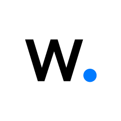

Sécurité défensive
Détecter, durcir, répondre — construire un SOC qui voit ce qui compte.
Le Bachelor Cybersécurité & Ethical Hacking m'a donné les fondations théoriques et pratiques de la sécurité défensive — Ethical Hacking & Audit de Sécurité, Sécurité informatique, Social Engineering, Cryptologie, Normes ISO 27001 — que j'ai voulu tester au-delà de la salle de cours. J'ai construit ma propre chaîne de détection : un SIEM Wazuh pour centraliser en continu les connexions, les échecs d'authentification et les processus suspects sur l'ensemble de mon parc, complété par Suricata en coupure réseau pour inspecter le trafic lui-même. Pour aller plus loin, j'ai exposé volontairement un honeypot T-Pot et observé, en conditions réelles, des scans automatisés et des tentatives de bruteforce SSH par milliers — une confrontation directe avec des attaquants réels qu'aucun cours magistral ne remplace. Je durcis désormais systématiquement chaque machine avec les CIS Benchmarks avant sa mise en service, et je maintiens toujours un plan de réponse à incident prêt à être activé. Je poursuis cette compétence à un niveau supérieur dans mon Mastère Spécialisé® Expert en cybersécurité, qui m'apprend à la piloter à l'échelle d'un SOC — passer de la détection sur mon propre labo au pilotage de la sécurité d'un système d'information entier.

Ce que j'ai appris
J'aborde la sécurité par la visibilité : sans télémétrie, pas de défense. J'ai déployé une chaîne de détection complète, du capteur réseau au tableau de bord, pour une visibilité totale sur mes machines et mon réseau, et je sais l'exploiter en cas d'incident.